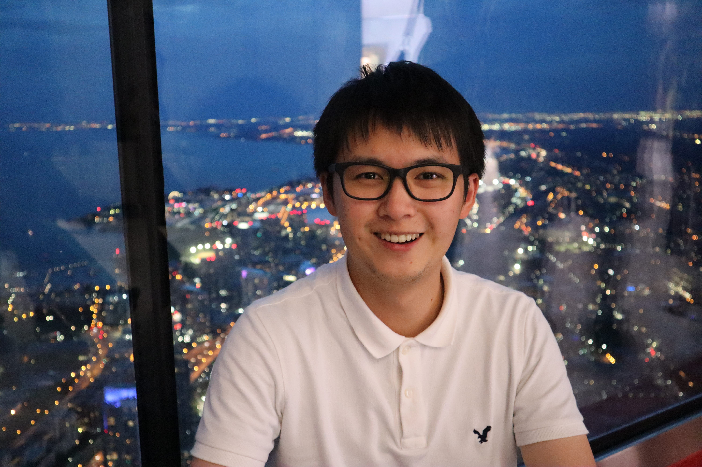

|  |
I am currently working at Perplexity AI to build an AI answer engine.
Previously, I worked at Kumo AI to productionize Graph Neural Networks (GNNs) on modern relational databases.
I received a Ph.D. degree from the Department of Computer Science at Stanford, advised by Prof. Jure Leskovec. I built machine learning theory/methods/benchmarks for graph-structured data, aiming to improve diverse real-world applications, such as recommender systems, drug/material discovery, and weather forecasting. I am excited about applying (graph) machine learning to solve interesting and important real-world problems.
I received a B.E. in Mathematical Engineering in 2016, and an M.S. in Computer Science in 2018, both from the University of Tokyo, where I worked with Prof. Masashi Sugiyama on machine learning and Prof. Hirosuke Yamamoto on information theory. I also worked with Prof. Jun'ichi Tsujii and Prof. Hideki Mima on natural language processing.
[CV (out-dated)] [Google Scholar]
Weihua Hu, Kaidi Cao, Kexin Huang, Edward W Huang, Karthik Subbian, Kenji Kawaguchi, Jure Leskovec.
TuneUp: A Simple Improved Training Strategy for Graph Neural Networks.
[arXiv]
Yiwen Yuan, Zecheng Zhang, Xinwei He, Akihiro Nitta, Weihua Hu, Dong Wang, Manan Shah, Shenyang Huang, Blaž Stojanovič, Alan Krumholz, Jan Eric Lenssen, Jure Leskovec, Matthias Fey.
ContextGNN: Beyond Two-Tower Recommendation Systems.
International Conference on Learning Representations (ICLR), 2025. (oral)
[arXiv]
Joshua Robinson*, Rishabh Ranjan*, Weihua Hu*, Kexin Huang*, Jiaqi Han, Alejandro Dobles, Matthias Fey, Jan Eric Lenssen, Yiwen Yuan, Zecheng Zhang, Xinwei He, Jure Leskovec.
RelBench: A Benchmark for Deep Learning on Relational Databases.
Neural Information Processing Systems (NeurIPS), Datasets and Benchmarks Track, 2024.
[arXiv] [project page]
Weihua Hu, Yiwen Yuan, Zecheng Zhang, Akihiro Nitta, Kaidi Cao, Vid Kocijan, Jure Leskovec, Matthias Fey.
PyTorch Frame: A Modular Framework for Multi-Modal Tabular Learning.
Table Representation Learning Workshop at NeurIPS 2024. (Best paper award)
[arXiv] [code]
Jialin Chen, Jan Eric Lenssen, Aosong Feng, Weihua Hu, Matthias Fey, Leandros Tassiulas, Jure Leskovec, Rex Ying.
From Similarity to Superiority: Channel Clustering for Time Series Forecasting.
Neural Information Processing Systems (NeurIPS), 2024.
[arXiv]
Matthias Fey*, Weihua Hu*, Kexin Huang*, Jan Eric Lenssen*, Rishabh Ranjan*, Joshua Robinson*, Rex Ying, Jiaxuan You, Jure Leskovec.
Relational Deep Learning: Graph Representation Learning on Relational Databases.
International Conference on Machine Learning (ICML), 2024. Position paper.
[arXiv] [project page]
Weihua Hu, Matthias Fey.
Hybrid Graph Neural Networks for Recommendation.
[Blog post] [Documentation]
Remi Lam*, Alvaro Sanchez-Gonzalez*, Matthew Willson*, Peter Wirnsberger*, Meire Fortunato*, Alexander Pritzel*, Suman Ravuri, Timo Ewalds, Ferran Alet, Zach Eaton-Rosen, Weihua Hu, Alexander Merose, Stephan Hoyer, George Holland, Jacklynn Stott, Oriol Vinyals, Shakir Mohamed, Peter Battaglia.
Learning skillful medium-range global weather forecasting.
Science
[paper] [blog]
[code]
Shenyang Huang*, Farimah Poursafaei*, Jacob Danovitch, Matthias Fey, Weihua Hu, Emanuele Rossi, Jure Leskovec, Michael Bronstein, Guillaume Rabusseau, Reihaneh Rabbany.
Temporal Graph Benchmark for Machine Learning on Temporal Graphs.
Neural Information Processing Systems (NeurIPS), Datasets and Benchmarks Track, 2023.
[arXiv] [project page] [code]
Weihua Hu
On the Predictive Power of Graph Neural Networks
Ph.D. Thesis in Computer Science, Stanford University.
KDD Outstanding Doctoral Dissertation Award
[thesis]
Weihua Hu, Rajas Bansal, Kaidi Cao, Nikhil Rao, Karthik Subbian, Jure Leskovec.
Learning Backward Compatible Embeddings.
ACM SIGKDD Conference on Knowledge Discovery and Data Mining (KDD), Applied Data Science Track, 2022.
[arXiv] [code]
Shiori Sagawa*, Pang Wei Koh*, Tony Lee*, Irena Gao*, Sang Michael Xie, Kendrick Shen, Ananya Kumar, Weihua Hu, Michihiro Yasunaga, Henrik Marklund, Sara Beery, Etienne David, Ian Stavness, Wei Guo, Jure Leskovec, Kate Saenko, Tatsunori Hashimoto, Sergey Levine, Chelsea Finn, and Percy Liang.
Extending the WILDS benchmark for unsupervised adaptation.
International Conference on Learning Representations (ICLR), 2022. (oral)
[arXiv] [project page] [code]
Weihua Hu, Matthias Fey, Hongyu Ren, Maho Nakata, Yuxiao Dong, Jure Leskovec.
OGB-LSC: A Large-Scale Challenge for Machine Learning on Graphs.
KDD Cup 2021. NeurIPS competition 2022.
Neural Information Processing Systems (NeurIPS), Datasets and Benchmarks Track, 2021.
[arXiv] [project page] [kddcup 2021] [neurips 2022] [code]
Weihua Hu, Muhammed Shuaibi, Abhishek Das, Siddharth Goyal, Anuroop Sriram, Jure Leskovec, Devi Parikh, C. Lawrence Zitnick.
ForceNet: A Graph Neural Network for Large-Scale Quantum Calculations.
Deep Learning for Simulation Workshop at ICLR 2021. (Best paper award)
[arXiv] [code] [talk]
Lowik Chanussot*, Abhishek Das*, Siddharth Goyal*, Thibaut Lavril*, Muhammed Shuaibi*, Morgane Riviere, Kevin Tran, Javier Heras-Domingo, Caleb Ho, Weihua Hu, Aini Palizhati, Anuroop Sriram, Brandon Wood, Junwoong Yoon, Devi Parikh, C. Lawrence Zitnick, Zachary Ulissi.
The Open Catalyst 2020 (OC20) Dataset and Community Challenges.
ACS Catalysis, 2021.
[arXiv] [project page] [code]
C. Lawrence Zitnick, Lowik Chanussot, Abhishek Das, Siddharth Goyal, Javier Heras-Domingo, Caleb Ho, Weihua Hu, Thibaut Lavril, Aini Palizhati, Morgane Riviere, Muhammed Shuaibi, Anuroop Sriram, Kevin Tran, Brandon Wood, Junwoong Yoon, Devi Parikh, Zachary Ulissi.
An Introduction to Electrocatalyst Design using Machine Learning for Renewable Energy Storage.
[arXiv]
Pang Wei Koh*, Shiori Sagawa*, Henrik Marklund, Sang Michael Xie, Marvin Zhang, Akshay Balsubramani, Weihua Hu, Michihiro Yasunaga, Richard Lanas Phillips, Irena Gao, Tony Lee, Etienne David, Ian Stavness, Wei Guo, Berton A. Earnshaw, Imran S. Haque, Sara Beery, Jure Leskovec, Anshul Kundaje, Emma Pierson, Sergey Levine, Chelsea Finn, Percy Liang
WILDS: A benchmark of in-the-wild distribution shifts.
International Conference on Machine Learning (ICML), 2021. (long talk)
[arXiv] [project page] [code]
Weihua Hu, Matthias Fey, Marinka Zitnik, Yuxiao Dong, Hongyu Ren, Bowen Liu, Michele Catasta, Jure Leskovec.
Open Graph Benchmark: Datasets for Machine Learning on Graphs.
Neural Information Processing Systems (NeurIPS), 2020. (spotlight)
[arXiv] [project page] [code] [talk]
Weihua Hu*, Bowen Liu*, Joseph Gomes, Marinka Zitnik, Percy Liang, Vijay Pande, Jure Leskovec.
Strategies for Pre-training Graph Neural Networks.
International Conference on Learning Representations (ICLR), 2020. (spotlight)
Graph Representation Learning Workshop at NeurIPS 2019. (oral)
[OpenReview] [project page] [code]
Hongyu Ren*, Weihua Hu*, Jure Leskovec.
Query2box: Reasoning over Knowledge Graphs in Vector Space Using Box Embeddings.
International Conference on Learning Representations (ICLR), 2020.
[OpenReview] [project page] [code]
Keyulu Xu*, Weihua Hu*, Jure Leskovec, Stefanie Jegelka.
How Powerful are Graph Neural Networks?
International Conference on Learning Representations (ICLR), 2019. (oral)
[OpenReview] [arXiv] [code]
Weihua Hu, Takeru Miyato, Seiya Tokui, Eiichi Matsumoto, Masashi Sugiyama.
Unsupervised Discrete Representation Learning.
Explainable AI: Interpreting, Explaining and Visualizing Deep Learning. Springer, Cham, 2019. 97-119.
(Book chapter contribution of our ICML 2017 work.)
[Chapter]
Weihua Hu, Gang Niu, Issei Sato, Masashi Sugiyama.
Does Distributionally Robust Supervised Learning Give Robust Classifiers?
International Conference on Machine Learning (ICML), 2018.
[arXiv]
Bo Han, Quanming Yao, Xingrui Yu, Gang Niu, Miao Xu, Weihua Hu, Ivor Tsang, Masashi Sugiyama.
Co-teaching: Robust training of deep neural networks with noisy labels.
Neural Information Processing Systems (NeurIPS), 2018.
[arXiv]
Weihua Hu, Takeru Miyato, Seiya Tokui, Eiichi Matsumoto, Masashi Sugiyama.
Learning Discrete Representations via Information Maximizing Self Augmented Training.
International Conference on Machine Learning (ICML), 2017.
[arXiv][code][talk]
Weihua Hu, Hirosuke Yamamoto, Junya Honda.
Worst-case Redundancy of Optimal Binary AIFV Codes and their Extended Codes.
IEEE Transactions on Information Theory, vol.63, no.8, pp.5074-5086, August 2017.
[arXiv]
Takashi Ishida, Gang Niu, Weihua Hu, Masashi Sugiyama.
Learning from Complementary Labels.
Neural Information Processing Systems (NeurIPS), 2017.
[arXiv]
Weihua Hu, Hirosuke Yamamoto, Junya Honda.
Tight Upper Bounds on the Redundancy of Optimal Binary AIFV Codes.
IEEE International Symposium on Information Theory (ISIT), 2016.
[paper][slide]
Weihua Hu, Jun'ichi Tsujii.
A Latent Concept Topic Model for Robust Topic Inference Using Word Embeddings.
The annual meeting of the Association for Computational Linguistics (ACL), 2016.
[paper][poster][code]
Lead organizer of the Open Graph Benchmark Large-Scale Challenge at the NeurIPS 2022.
Lead organizer of the Open Graph Benchmark Large-Scale Challenge at the KDD Cup 2021.
Forbes 30 under 30, Japan (2023)
Masason Foundation Fellowship (2019–)
Funai Overseas Scholarship (2018–)
Dean’s Award, Graduate School of Information Science and Technology, University of Tokyo (2018)
AIP network lab director award (2017)
Conference Reviewer (NerIPS 2019–2021, ICML 2020–2021, ICLR 2021–2022, KDD 2022–2023, AAAI 2024, ECML-PKDD 2020, ISIT 2020)
Workshop Reviewer (GRL+ workshop and ILRGNN workshop at ICML 2020)
December 18, 2023: Invited Talk@Tsinghua University, China
October 24, 2023: Invited Talk@Stanford Graph Learning Workshop, USA [video]
August 8, 2023: Keynote at Ph.D. and Undergraduate Consortiums@KDD, USA
August 7, 2023: KDD Dissertation Award Talk@KDD, USA [video]
May 16, 2023: Link Prediction with Graph Neural Networks Webinar Talk@Kumo [website]
December 21, 2022: Invited Talk@TrustML Young Scientist Seminars, Japan [video]
September 28, 2022: Invited Talk@Stanford Graph Learning Workshop, USA [video]
September 2, 2022: Invited Talk@Combridge University, UK
August 4, 2022: Invited Talk@TMLR group at HKBU, Hong Kong
June 2, 2022: Invited Talk@BAAI, China
March 3, 2022: Invited Talk@MILA GRL Reading Group, Canada [video]
September 16, 2021: Invited Talk@Stanford Graph Learning Workshop, USA [video]
September 2, 2021: Invited Seminar Talk@RIKEN AIP Center, Japan [video]
May 6, 2021: Invited Seminar Talk@Stanford CogAI lab, USA
Auguest 24, 2020: Invited Short Talk@KDD Deep Learning Day [video]
Auguest 5, 2020: Invited Seminar Talk@RIKEN AIP Center, Japan
June 24, 2020: Invited Seminar Talk@Twitter Machine Learning Group, UK
June 23, 2020: Invited Seminar Talk@4Paradigm, Hong Kong
Spring 2023: Guest Lecture at CS224W (Machine Learning with Graphs) at Stanford
Fall 2021: Teaching Assistant for CS224W (Machine Learning with Graphs) at Stanford
Winter 2021: Teaching Assistant for CS224W (Machine Learning with Graphs) at Stanford
Software Engineer Intern at Kumo.ai, Mountain View (2022.9–2022.12)
Research Intern at DeepMind, London (2022.6–2022.9)
Research Intern at Facebook Artificial Intelligence Research, Menlo Park (2020.6–2020.9)
Research Assistant at Center for Advanced Integrated Intelligence Research, RIKEN (2016.11–2018.8)
AIP Challenge (Research funding) “Reliable machine learning in the wild” (2016.10–2017.3)
Technical Staff at Artificial Intelligence Research Center, AIST (2015.10–2016.10)
Internship at Preferred Networks (2016.8–2016.9)
Part-time Engineer at Preferred Infrastructure (2015.11–2016.3)
Email: weihuahu [at] cs.stanford.edu
URL: https://weihua916.github.io/
Github: https://github.com/weihua916/